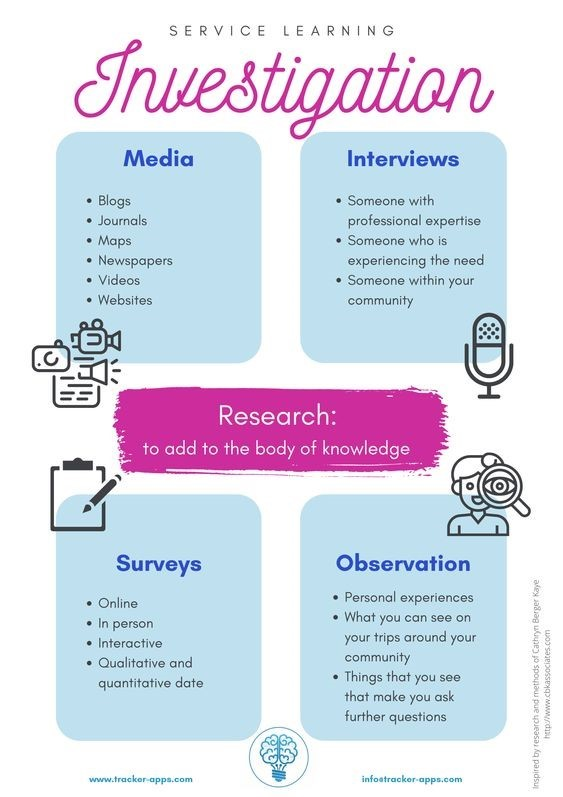

Click to rotate!
The compass is a tool developed for sustainability and systems thinking. It emphasizes interdependency and interdependence. We use this tool to understand how different topics and workshops can relate to these four different compass points and it gives us an idea of how the workshops fits into the grander scheme of the conference and changemakers in general. In addition, it is a common framework used and provides a shared language and terminology when discussing local and global issues, and more.
|
Nature |
Economy |
Society |
Wellbeing |
|---|---|---|---|
|
Harmony with Nature through Photography |
True Price |
Assets & Partners Mapping |
Sustainability, Happiness & Success |
The Future of Biodiversity |
Income Inequality on Dollar Street |
Active Listening & Diverse Storytelling |
Holistic Wellness Wheels |
|
Mirror Walking through Nature's Orchestra |
Doughnut Economics for Kids |
Tyranny of Metrics |
Brand Association: Is Your Identity Your Own? |
Ecological Footprints |
What's wrong with GDP? |
Tools of Ethnography |
Humane Technology & Ledger of Harms |
7Rs & Zero Waste |
Attention Economics |
Civil Discourse: Debate for Impact |
Lead by Letting Go |
|
Facing Eco-Anxiety: Work That Reconnects |
Economics of Climate Change |
Social Justice Standards |
Wabi-Sabi: Beauty in Imperfection & Transience |
| Nature | |
|---|---|
| Harmony with Nature through Photography | The Future of Biodiversity |
| Mirror Walking through Nature's Orchestra | Ecological Footprints |
| 7Rs & Zero Waste | Facing Eco-Anxiety: Work That Reconnects |
| Economy | |
|---|---|
| True Price | Income inequality on Dollar Street |
| Doughnut Economics for Kids | What's wrong with GDP? |
| Attention Economics | Economics of Climate Change |
| Society | |
|---|---|
| Assets & Partners Mapping | Active listening & Diverse Storytelling |
| Tyranny of Metrics | Tools of Ethnography |
| Civil Discourse: Debate for Impact | Social Justice Standards |
| Wellbeing | |
|---|---|
| Sustainability, Happiness & Success | Holistic Wellness Wheels |
| Brand Association: Is Your Identity Your Own? | Humane Technology & Ledger of Harms |
| Lead by Letting Go | Wabi-Sabi: Beauty in Imperfection & Transience |

Before digging into the issues that we care about, we must first build care and strength for our own self.
This framework was created to support the United Nations Sustainable Development Goals.
To easily investigate other perspectives in K-12 and in higher education, we can use a service learning research tool: MISO. Originator Cathryn Berger Kaye and her collaborators Shei Ascencio and LeeAnne Lavender of CBK Associates, they created the MISO method of research.
Most questions are divided into three parts:
a. What you currently do (so that you can identify the ways you're
already living your values);
b. What you want to learn/do (so that you can set goals for living a
more MOGO life);
c. What steps will you take (so that you are making specific, actionable
plans for living with deeper integrity).
|
The qualities that are most important to me and that I currently model to loved ones: |
To successfully model my chosen qualities/values, I will take the following steps: (In answering this prompt, consider such questions as, Who am I willing to talk to? What am I willing to give? And what am I willing to risk?) |
|
Qualities/values I want to model more consciously: |

Whether planning or reflecting, the MoGo resource can be used for addressing service. Examples of action that fall into one of the four categories: advocacy, direct action, research,
"Teaspoon of Change is a concept and mindset. It is knowing that all our choices, decisions and actions have an impact on people and the planet."

This model is developed to help us understand the actual issue that is
being addressed and it provides a very nice jumping board when working
with problem-solving and finding solutions.
First, address what the central problem is which is how you define the
general issue, and you then work to analyze the symptoms of the issue
which also includes its impact, etc. You then lastly identify what is
actually causing the issue and this is also where you can develop a
solution to the issue.
There are many different versions of this tool around the world and it is widely popular in all kinds of work. Similar to the root cause analysis tree the Iceberg is used to identify the underlying issue of something. You first identify the superficial events that you see happen (similar to what the symptoms are) which is what you are reacting to. This is the surface of the iceberg, but as you may know, icebergs extend deeply into the sea and the surface is only a small part of the whole structure. You then identify which patterns you can associate with the issue also known as anticipating.

There are many different versions of this tool around the world and it is widely popular in all kinds of work. Similar to the root cause analysis tree the Iceberg is used to identify the underlying issue of something. You first identify the superficial events that you see happen (similar to what the symptoms are) which is what you are reacting to. This is the surface of the iceberg, but as you may know, icebergs extend deeply into the sea and the surface is only a small part of the whole structure. You then identify which patterns you can associate with the issue also known as anticipating.